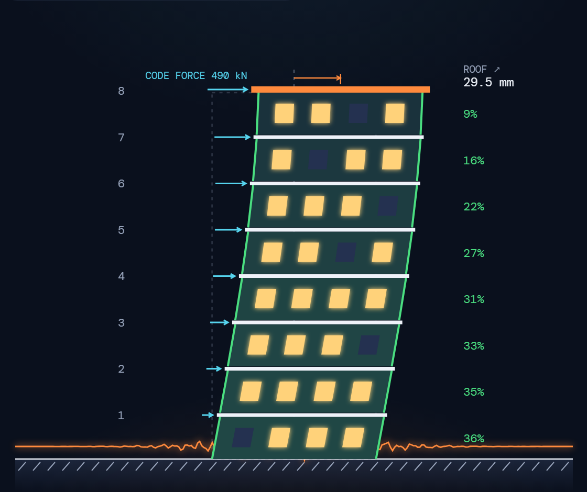
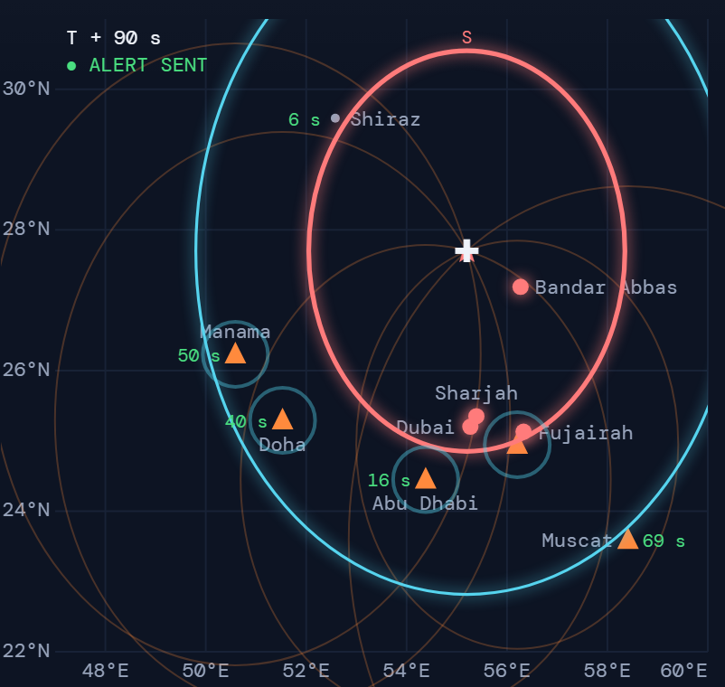
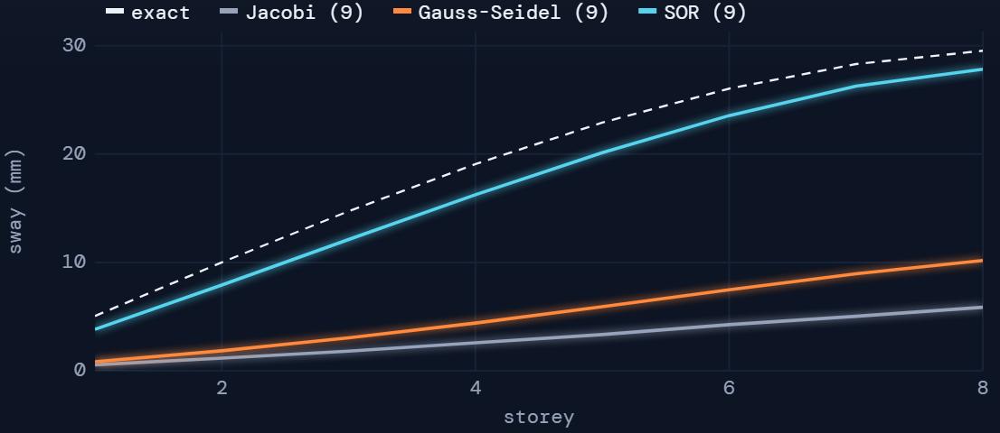
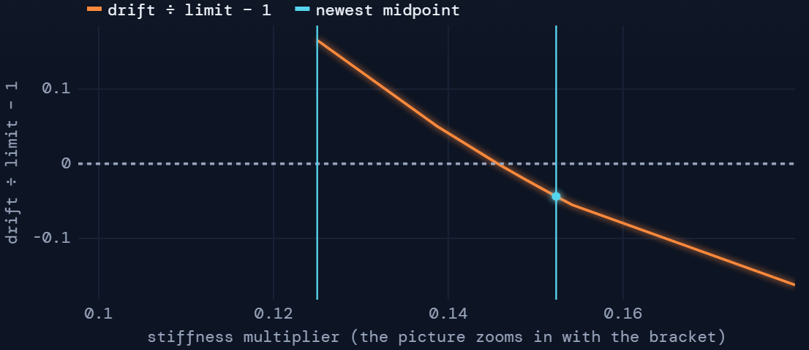

Written for someone who knows nothing about buildings, earthquakes or numerical methods. Live site: https://krshn-a.github.io/quakesafe/ · Code: https://github.com/Krshn-A/quakesafe · Describes the code at commit 5c0cde2, 28 November 2026.
QuakeSafe is a website. You tell it about a building: how many floors it has, how heavy each floor is and how strong its columns are. The site then answers three questions.
There is also a second, smaller part. It shows how an earthquake is detected by measuring stations, how its position is worked out, and how many seconds of warning a city can get.
Why is this a numerical methods project? Because none of those questions can be answered with one simple formula. Each one turns into a mathematical problem that has to be solved step by step by a computer: a set of many equations, a search for a special number, a best-fit line and so on. The methods for doing that are exactly the ones taught in the course. The building and the earthquake are the story. The methods are what the project is marked on.
Two more things matter. First, every method is written by hand, in the programming language Python. We did not use a ready-made solver. Second, every result is checked against an answer we already know to be right. Both points come up in every viva, and both are explained later.
Think of a building as a stack of heavy plates, the floors, held apart by columns. When the ground moves sideways, the floors do not move as one solid block. Each floor lags behind and the columns bend a little, like a plastic ruler when you push its top end.
To describe this with numbers we need only two things for each floor.
So in our model each floor is a mass, and the columns of each storey act as a spring with a certain stiffness. This simple picture is used in real engineering as a first check, and it is example 12.4 in the course textbook (Chapra and Canale).
Take a small building with three floors, where every storey has stiffness 1. Push the floors sideways with forces F₁, F₂ and F₃, and call the distances they move u₁, u₂ and u₃. Each floor must be in balance: the springs pulling on it must equal the force pushing it.
That is three equations with three unknowns. Writing only the numbers in front of the unknowns gives a grid of numbers called a matrix:
[ 2 −1 0 ] [ u₁ ] [ F₁ ] K = [ −1 2 −1 ] u = [ u₂ ] F = [ F₂ ] and the three equations are written K u = F [ 0 −1 1 ] [ u₃ ] [ F₃ ]
K is called the stiffness matrix. "Solving K u = F" simply means: find the three movements that satisfy all three equations at once. A 40-storey building gives 40 equations, which is why we need a computer and a method.
Three words describe this particular matrix, and you will use them often.
A second matrix, the mass matrix M, simply holds the mass of each floor on its diagonal.
Pull the top of a building sideways and let go. It swings back and forth, like a ruler twanged on the edge of a desk. The time for one complete swing, there and back, is called the period (T), measured in seconds. The number of swings per second is the frequency. One is just the other turned upside down: a period of 0.5 s is a frequency of 2 swings per second (2 hertz, written 2 Hz).
For a single floor on a single spring there is a formula, T = 2π√(m/k). For many floors there is no simple formula, and that is where one of our methods comes in.
A building with several floors can swing in several different patterns. In the simplest pattern all floors lean the same way, like a tree in the wind. In the next one the top goes one way while the middle goes the other, like a snake. Each pattern is called a mode, its shape is the mode shape, and each has its own period. The first mode, the simple lean, is the slowest and the most important.
The technical words. Finding these patterns means solving K φ = ω² M φ. This is called an eigenvalue problem. The number ω² is an eigenvalue and the pattern φ is its eigenvector. Here ω (omega) is the swinging speed in radians per second, and the period is T = 2π/ω. So when someone asks "what does an eigenvalue mean in your project?", the answer is: it is the square of a natural frequency of the building, and its eigenvector is the shape the building takes when it swings at that frequency.
Think of pushing a child on a swing. If you push at just the right moment each time, in step with the swing, small pushes build up into a huge swing. Push at the wrong rhythm and nothing much happens.
A building is the same. If the ground shakes at the building's own rhythm, the sway builds up and becomes very large. This is called resonance, and it is the main danger in an earthquake. It also explains something surprising: an earthquake with slow shaking can damage tall buildings and leave short ones alone, while quick shaking does the opposite.
Damping is what stops the sway growing for ever. It is the energy a building loses in every swing through friction and small movements, like a swing that slowly comes to rest when you stop pushing. We describe it as a percentage; real buildings have a few percent, and the site uses 5% unless you change it.
Storey drift is how far one floor moves sideways compared with the floor directly below it. It matters more than the total movement, because it is the difference between two floors that bends the columns and cracks the walls between them.
Building rules, called codes, set a limit on drift. The site uses 2% of the height of a storey. A storey 3.2 m high may therefore drift 64 mm at most. If every storey is under the limit the building passes; if any storey is over, it fails.
One special case is the soft storey: a storey much weaker than the ones above it, such as an open car park under a block of flats. Almost all the drift collects in that one weak storey. It is a well-known cause of real collapses, and the site has a ready-made example of it.
A numerical method is a recipe of simple arithmetic steps that a computer repeats until it reaches an answer. We need such recipes because most real problems have no neat formula.
There are two kinds, and the difference matters throughout the project.
Because a computer stores only about 16 digits of any number, and because iterative methods stop before they are perfect, every answer has a small error. Three terms describe this.
The rule our iterative methods use to decide when to stop is the approximate relative error: how much the answer changed in the last round, divided by the size of the answer. Remember one warning, because examiners like it: a small change in the last round does not prove the answer is close to the truth. A method that is crawling forward also changes very little each round. The site shows the true error next to the approximate one so that you can see the difference.
The site has six tabs across the top. Open it and follow along.
This is where you describe the building, using sliders on the left: the number of storeys (1 to 40), the storey height, the mass of each floor and the stiffness of each storey. There are five ready-made buildings to pick from, including the one with an open ground floor.
You can also choose how the building resists sideways force, called its structural system.
The drawing in the middle shows the building leaning under the earthquake load. The blue arrows are the sideways forces on each floor. Each storey is coloured green if it is safe, amber if it is above 70% of the limit and red if it fails, and the percentage beside it is its share of the limit. The buttons above the drawing switch to an animation of mode 1, 2 or 3.
On the right are the answers: the period, the largest drift, the roof movement and a clear pass or fail. A button below, Find the minimum stiffness that passes, works out how strong the columns need to be.
Whenever you move a slider, the drawing keeps the old shape for about three seconds as a dashed outline marked BEFORE, and shows how much the roof movement went up or down. This lets you see the effect of each change.

The Building tab pushes the building with a steady force. The Shake tab does something different: it shakes the ground back and forth at one steady rhythm and shows how the building responds.
The main chart is the resonance curve. Along the bottom is the shaking frequency, from slow on the left to fast on the right. The height of the curve is how far the roof sways. The tall peak is resonance: the frequency that matches the building's own rhythm.
A slider picks one frequency, and the drawing on the right shows the building moving at that frequency, in slow motion. The ground moves too, and a glowing line above the roof traces the path the roof has drawn.
This tab also holds the three protection devices, which are explained in Part 6, and three extras.
This tab is about the earthquake itself. A map shows measuring stations and cities around the Gulf. You click the map to place an earthquake and choose its strength. The site then shows what each station records, works out where the earthquake was, and lists how many seconds of warning each city gets. A Play the earthquake button animates the waves spreading across the map. Part 7 explains how all of this works.
The Lab is where the numerical methods are put side by side. It takes the building from the Building tab and solves the same problem with every method, so that you can compare how much work each one needs and how accurate it is. A Replay the solvers button shows the iterative methods closing in on the answer step by step. This is the tab to show an examiner who asks about the methods.
One button runs 87 checks. Each check compares something the site computes with an answer known to be correct, and shows both numbers and the difference.
This tab lists honestly what the model leaves out and which data are made up. Read it before the viva. Saying these things yourself, before you are asked, earns credit.
To keep things simple we use one small example for every method: the three-floor building of section 2.2, pushed by forces of 1, 2 and 3 on its floors. So we want to solve:
2u₁ − u₂ = 1 −u₁ + 2u₂ − u₃ = 2 The answer is u₁ = 6, u₂ = 11, u₃ = 14. − u₂ + u₃ = 3
We can check that answer with common sense. The top storey carries only the top force, 3. The middle storey carries 3 + 2 = 5. The bottom storey carries all of it, 6. Since the stiffness is 1, the storeys stretch by 6, 5 and 3. So the first floor moves 6, the second 6 + 5 = 11, and the third 11 + 3 = 14. Every method below must give 6, 11, 14, and every number shown was produced by the site's own functions.
The problem it solves: several equations with several unknowns.
The idea: this is the method from school. Use one equation to remove an unknown from the others, then repeat, until the last equation has only one unknown left. Solve that one, then work backwards.
Steps 1 and 2 are called forward elimination and step 3 is back substitution. The number you divide by at each stage (the 2, then the 1.5) is the pivot.
Partial pivoting. If a pivot happens to be zero, or very small, dividing by it gives nonsense or magnifies round-off error. So before each stage the method looks down the column and swaps in the equation with the largest number there. Our code does this every time.
Singular matrix. Sometimes the equations have no single answer, for example when two of them say the same thing. Then a pivot comes out as zero even after swapping, and the matrix is called singular. Our code treats a pivot as zero if it is smaller than 10⁻¹⁴ of the largest number in its own row, and reports an error.
Where the site uses it: in the Shake tab, where the equations are not symmetric and no shortcut applies; as the reference answer in the Lab; and to find the earthquake's position from three stations. The function is gauss_solve.
Cost: for n equations it takes roughly 2n³/3 arithmetic operations. For our 8-storey building that is 341. Doubling the number of equations makes it eight times more work.
The problem it solves: the same equations, but when you need to solve them many times with different right-hand sides.
The idea: the elimination work in Gauss depends only on the matrix, not on the forces. So do that work once and keep a record of it. It is like sorting a filing cabinet once so that every later search is quick.
The record is two triangular matrices. L (lower) holds the multipliers used during elimination, and U (upper) is what elimination leaves behind. For our example:
[ 1 0 0 ] [ 2 −1 0 ] L = [ −0.5 1 0 ] U = [ 0 1.5 −1 ] and L × U gives back K. [ 0 −0.667 1 ] [ 0 0 0.333]
To solve for any forces you then do two quick passes: one downwards through L, called forward substitution, and one upwards through U, the back substitution you already know.
A bonus: the determinant of the matrix, a single number that is zero exactly when the matrix is singular, is just the diagonal of U multiplied together: 2 × 1.5 × 0.333 = 1.
Where the site uses it: in finding the periods (section 5.8), which solves with the same matrix K at every step. K is split once and reused. The functions are lu_decompose, lu_solve and lu_det.
The idea: if a matrix is symmetric and positive definite, as our stiffness matrix is, there is a shortcut. It can be written as one triangular matrix times its own mirror image, K = L Lᵀ. You can think of L as a kind of square root of K. Because only one triangle has to be worked out, it takes about half the work of Gauss: 171 operations against 341 for our 8-storey building.
For our example the first entry of L is √2 = 1.414, and the whole of L is [1.414, 0, 0; −0.707, 1.225, 0; 0, −0.816, 0.577].
When it fails: if the matrix is not positive definite, the method would need the square root of a negative number. Our code spots this and reports an error. That makes Cholesky a handy test of whether a matrix is positive definite.
Where the site uses it: for wall and frame + core buildings, whose stiffness matrix is full, and inside the regression of section 5.10. The functions are cholesky and cholesky_solve.
The idea: when the matrix is tridiagonal, Gauss elimination wastes almost all its time subtracting zeros. The Thomas algorithm is Gauss elimination that knows about the zeros. It stores only the three diagonals and makes one pass down and one pass up.
For our example it does exactly the two elimination steps of section 5.1 and nothing else. The saving grows quickly with size: the work is about 8n instead of 2n³/3. For 8 storeys that is 64 operations against 341. For 40 storeys it is 320 against about 43,000.
A weakness to know: it does no pivoting. That is safe for our matrices because they are positive definite, but it is not safe in general.
Where the site uses it: for the sway of every frame building under the earthquake load. The function is thomas.
The idea: the inverse of a matrix, written K⁻¹, is the matrix that undoes it. If you know K⁻¹ you get the answer by multiplying: u = K⁻¹F. To find it, write K next to the identity matrix (ones on the diagonal, zeros elsewhere) and eliminate above and below each pivot. When K has turned into the identity, what sits beside it is K⁻¹. That procedure is called Gauss–Jordan elimination.
[ 1 1 1 ] K⁻¹ = [ 1 2 2 ] Check: 1×1 + 1×2 + 1×3 = 6, 1×1 + 2×2 + 2×3 = 11, 1×1 + 2×2 + 3×3 = 14. [ 1 2 3 ]
The inverse means something here. The entry in row i and column j tells you how far floor i moves when you push floor j with a force of 1. It is called the flexibility matrix: it measures how easily the building gives way.
An important point for the viva: you should almost never solve equations by computing the inverse, because it costs about three times as much as Gauss (1,024 operations against 341 for 8 storeys). We compute it only when we need the inverse itself. That happens in two places. For a wall, the beam formula gives the flexibility directly, so the stiffness matrix has to be its inverse. And the condition number, next, needs the inverse. The function is gauss_jordan_inverse.
The idea: the condition number tells you how much you can trust the answer of a set of equations. Picture two lines on paper, where the answer is the point at which they cross. If the lines cross at a wide angle, a tiny wobble in one line hardly moves the crossing point. If they are nearly parallel, the same tiny wobble moves it a long way. The first case is well-conditioned; the second is ill-conditioned.
How it is worked out: first we need a single number for the "size" of a matrix, called its norm. We use the row-sum norm: add up the sizes of the numbers in each row and take the largest total. The condition number is the norm of the matrix times the norm of its inverse. For our example the largest row sum of K is 1 + 2 + 1 = 4, and of K⁻¹ is 1 + 2 + 3 = 6, so the condition number is 4 × 6 = 24.
How to read it: near 1 is perfect. As a rule of thumb, a condition number of a million means about six of the computer's sixteen digits may be lost.
Where the site uses it, each with a physical meaning:
The functions are norm_inf and cond_inf.
These three are iterative methods for the same equations. They start from a guess of all zeros and improve it round after round. Each round is called a sweep.
The trick they share: rearrange each equation so that it gives one unknown in terms of the others. From our three equations:
u₁ = (1 + u₂) / 2 u₂ = (2 + u₁ + u₃) / 2 u₃ = 3 + u₂
Jacobi works out all three new values using only the values from the previous sweep. Starting from zeros, the first sweep gives u₁ = 1/2 = 0.5, u₂ = 2/2 = 1 and u₃ = 3. It is like a team in which everyone updates their work using yesterday's notes.
Gauss–Seidel uses each new value as soon as it has it. In the first sweep u₁ = 0.5 as before. But then u₂ = (2 + 0.5 + 0)/2 = 1.25, using the new u₁. And u₃ = 3 + 1.25 = 4.25, using the new u₂. Fresher information means faster progress.
SOR stands for successive over-relaxation. It takes the step Gauss–Seidel would take and stretches it by a factor, written ω (omega), between 1 and 2. If each step is in the right direction but too timid, going further gets there sooner. With ω = 1.5 the first value becomes 1.5 × 0.5 = 0.75.
How they compare on our example. Jacobi needs 100 sweeps, Gauss–Seidel 52, and SOR with ω = 1.5 needs 24. Trying different values of ω shows there is a best one: 52 sweeps at 1.0, 33 at 1.2, 19 at 1.4, 24 at 1.5, 45 at 1.7 and 71 at 1.8. Past the best value the method overshoots and gets slower. On the real 8-storey building the numbers are 632, 331 and 46, with a best ω of 1.70.
Do they always work? No. They are sure to converge when the matrix is diagonally dominant, which means that in every row the number on the diagonal is at least as big as the others in that row added together. Our frame matrix is like that. The matrix of a wall building is not, and there Jacobi diverges: every sweep makes the answer bigger instead of better. Our code notices when the answer has grown a million million times and gives up.
Why bother, when Thomas is so much faster? For a small building there is no practical reason. The Lab runs them so that the methods can be compared on the same problem. Iterative methods win for very large problems with millions of unknowns, where a direct method would run out of memory. The functions are jacobi, gauss_seidel and sor.
The problem they solve: finding the eigenvalues, and so the periods and mode shapes of the building.
Power iteration. Take any list of numbers, one per floor, and multiply it by the matrix. Then do it again, and again. Each multiplication strengthens the part of the list that belongs to the largest eigenvalue more than the rest, so after enough rounds only that part is left. It is like a contest in which the strongest player gains a little in every round until nobody else is visible. On our example it finds the largest eigenvalue, 3.247, in 14 rounds.
Inverse iteration. The largest eigenvalue is the fastest wobble, but a building's slowest swing is what matters. So we turn the idea round. Instead of multiplying by K we solve with K at each round, which is the same as multiplying by its inverse. The smallest eigenvalue of K is the largest of K⁻¹, so now the slowest mode wins. This is where LU decomposition earns its place: K is split once and each round is just two quick passes. On our example it finds 0.198 in 7 rounds, with the shape (0.445, 0.802, 1): all three floors lean the same way, the top one most.
Getting the second and third modes: deflation. Once the first mode is known, we remove it from the guess before every round. With the first mode taken out it cannot win again, so the next one appears. Doing this gives 1.555 and 3.247.
The Rayleigh quotient. At each round the eigenvalue is estimated by a formula called the Rayleigh quotient, λ = (yᵀK y) ÷ (yᵀM y). You only need to know that it gives a more accurate eigenvalue than you would get by comparing the lists directly.
From eigenvalue to period. Take the square root to get ω, then T = 2π/ω. For the default building the first eigenvalue is 45.4, so ω = 6.74 and T = 0.932 s.
How we know it is right. For a building in which all floors are the same there is an exact formula, and for our example it gives 0.19806, 1.55496 and 3.24698: the same numbers. The functions are power_iteration and inverse_iteration.
The problem they solve: finding the value of x at which some quantity f(x) becomes zero. That value is called a root. Many design questions are of this kind. For example: "what stiffness makes the worst drift exactly equal to the limit?" is the same as asking where (drift ÷ limit − 1) is zero.
Bisection is the number-guessing game. Someone thinks of a number between 1 and 100; you say 50, they say "lower", you say 25, and so on. Each guess halves the range. In maths: start with two values where f has opposite signs, so the root must lie between them. That pair is called a bracket. Test the midpoint, keep the half in which the sign still changes, and repeat.
As an example take the function whose roots are the eigenvalues of our small building, f(λ) = −λ³ + 5λ² − 6λ + 1. At λ = 0 it is +1 and at λ = 1 it is −1, so a root lies between 0 and 1.
After 26 steps it settles on 0.198062, the same eigenvalue that inverse iteration found. Bisection has two great strengths: it cannot fail once you have a bracket, and you always know how far you are from the answer, because the root is inside the bracket.
False position tries to be cleverer. Instead of the midpoint, it draws a straight line between the two ends of the bracket and takes the point where that line crosses zero. On the same example its points are 0.5, 0.267, 0.211, 0.200, 0.198: it gets there in 12 steps instead of 26. Its weakness is that on a curved function one end of the bracket can stay stuck for the whole run (here the end at 0 never moves), so the bracket does not shrink to nothing and it can sometimes be slower than bisection.
Fixed-point iteration rewrites the problem as "x = something that depends on x" and keeps feeding the answer back in. Our version is what an engineer does by hand: if the drift is 35% of the limit, try columns that are 35% as stiff, then check again. In symbols, new stiffness = old stiffness × (drift ÷ limit). Starting from 1, the values go 1 → 0.355 → 0.212 → 0.163 → 0.1457 and stay there, so it takes 5 steps. It only works if each round brings the value closer, which is not guaranteed in general.
All three agree on the default building: the columns need only 0.1457 of their present stiffness, about 58 kN/mm per storey. Bisection takes 23 steps, false position 10 and fixed-point 5.
Why not the Newton–Raphson method? It needs the slope of the function. Our function is the result of a whole chain of calculations, so there is no formula for its slope. The three methods above need only the value of the function.
Where the site uses bisection: for the minimum stiffness, the mass of the damper, the stiffness of the base isolators, matching the model to a target period, estimating damage, and the roots of the determinant in the Lab. Notice that each time bisection tests a value, the site has to solve a full eigenvalue problem and a full set of equations. The methods are nested inside one another. The functions are bisection, false_position and fixed_point.
The problem it solves: you have measurements that roughly follow a trend, and you want the one line that fits them best.
The idea: "best" means the line for which the gaps between the points and the line, squared and added up, are as small as possible. This is called least squares. Squaring makes every gap positive and punishes big misses more than small ones.
How it is done: the condition for the smallest total turns into a small set of ordinary equations called the normal equations, written XᵀX a = Xᵀy. They are symmetric and positive definite, so we solve them with Cholesky. This is a nice example of one method using another.
Where the site uses it. Engineers know that taller buildings have longer periods, roughly following a curve T = C × hˣ, where h is the height. A curve is harder to fit than a line, so we take logarithms of both sides, which turns the curve into a straight line: log T = log C + x log h. Fitting the twelve sample rows in the Lab gives T = 0.0472 × h0.884.
How good is the fit? Two measures are shown. The first is r², a number between 0 and 1, where 1 means every point lies exactly on the line; ours is 0.996. The second is a hold-out test: fit the line using only half the rows, then see how well it predicts the other half. The error is −0.3% on average, with a spread of 6.3%.
Regression is also used in the Detect tab, as Part 7 explains. The functions are least_squares and fit_power_law.
Interpolation means reading a value between two known ones by drawing a straight line between them. The building code says a certain number, k, is 1 when the period is 0.5 s or less and 2 when it is 2.5 s or more. Our period is 0.932 s, which is 0.432 of the way along a 2-second range, so k = 1 + 0.432/2 = 1.216. The site also uses interpolation to place an uploaded recording on evenly spaced times. The functions are interp_linear and resample_uniform.
The mean is the ordinary average. The standard deviation measures how spread out the values are around the average: small means they agree closely. The site uses both in the earthquake trigger, in reporting the magnitude as an average with a spread across stations, and in the hold-out test above. The functions are mean and std.
The problem it solves: following something as it changes in time, such as a building swinging.
The idea: if you know where something is and how fast it is moving right now, you can estimate where it will be a moment later: new position = old position + speed × time step. Then you update the speed the same way, and repeat. It is like walking with your eyes shut, opening them only once per step to check your direction. With small steps you stay close to the path. With large steps you drift off.
What the site shows with it. A building with no damping, once set swinging, should swing for ever with exactly the same energy. Euler's method gets this wrong in a way that can be worked out exactly: at every step it multiplies the energy by (1 + ω²h²), where h is the time step. That is always more than 1, so the energy always grows.
This is a clear picture of truncation error and of how it builds up. It is also why the fastest wobble of the building matters, and why power iteration is used to find it: Euler's error grows fastest for the fastest wobble. The function is euler_free.
These are copied from the site's code. An examiner may open the code and point at a function. If you can explain these four, you can explain the others, because they follow the same patterns.
| Code | What each part does |
|---|---|
def thomas(e, f, g, r):
n = len(f); f = np.array(f, float); r = np.array(r, float)
for k in range(1, n):
if f[k - 1] == 0.0:
raise ZeroDivisionError(...)
w = e[k] / f[k - 1]
f[k] -= w * g[k - 1]
r[k] -= w * r[k - 1]
...
x = np.zeros(n); x[n - 1] = r[n - 1] / f[n - 1]
for k in range(n - 2, -1, -1):
x[k] = (r[k] - g[k] * x[k + 1]) / f[k]
return x |
e, f, g are the sub-diagonal, diagonal and super-diagonal; r is the right-hand side. Forward pass: for each row, w is the factor (entry below the pivot ÷ pivot). Subtracting w × the row above removes the sub-diagonal entry and changes only the diagonal and the right-hand side. Zero pivot: an error, because there is no pivoting. Backward pass: the last unknown directly, then each one from the one after it. Cost: one loop up and one loop down, so the work grows with n. |
def bisection(f, a, b, es=1e-7, maxit=200):
fa = f(a); fb = f(b)
if same_sign(fa, fb):
raise ValueError("no sign change in the bracket")
hist = []; c_old = a
for it in range(1, maxit + 1):
c = 0.5 * (a + b); fc = f(c)
ea = abs(c - c_old) / max(abs(c), 1e-300)
hist.append(ea); c_old = c
if not same_sign(fa, fc):
b = c; fb = fc
else:
a = c; fa = fc
if ea < es or fc == 0.0:
break
return c, it, hist |
f is any function; [a, b] must hold a sign change, or it stops with an error. c is the midpoint. ea is the approximate relative error: how far the midpoint moved, divided by its size. It is kept in hist for the Lab's chart. The choice: if f(a) and f(c) have different signs the root is in [a, c], so b moves to c. Otherwise a moves to c. Stop when ea is below the tolerance es, or the function is exactly zero. Returns the root, the number of steps and the error history. |
def sor(A, b, omega=1.0, es=1e-8, maxit=20000):
A = np.array(A, float); b = np.array(b, float); n = len(b)
x = np.zeros(n); hist = []
blown = DIVERGED * max(float(np.max(np.abs(b / np.diag(A)))), 1e-300)
for it in range(1, maxit + 1):
dmax = 0.0
for i in range(n):
s = A[i] @ x - A[i, i] * x[i]
xi = omega * (b[i] - s) / A[i, i] + (1.0 - omega) * x[i]
dmax = max(dmax, abs(xi - x[i])); x[i] = xi
size = float(np.max(np.abs(x)))
ea = dmax / max(size, 1e-300)
hist.append(ea)
if ea < es or not math.isfinite(ea) or size > blown:
break
return x, it, hist |
x starts at zero. One sweep is the inner loop over the rows. s is the sum of row i times x, leaving out the diagonal term. (b[i] − s) / A[i, i] is the Gauss–Seidel value for unknown i. It is mixed with the old value: ω of the new, (1 − ω) of the old. x[i] = xi at once, so the next row already uses it. That is what makes it Gauss–Seidel and not Jacobi. ea: the largest change in this sweep ÷ the largest value. Stop when ea is small, or the answer has blown up (divergence). gauss_seidel simply calls this with ω = 1. |
lu = lu_decompose(K)
for j in range(min(nm, n)):
x = ...starting guess...
for it in range(1, maxit + 1):
for ph in modes:
x = x - (ph @ (m * x)) * ph
y = lu_solve(lu, m * x)
for ph in modes:
y = y - (ph @ (m * y)) * ph
lam_new = float((y @ (K @ y)) / (y @ (m * y)))
y = y / math.sqrt(y @ (m * y))
done = abs(lam_new - lam) <= tol * abs(lam_new)
x = y; lam = lam_new
if done:
break
lams.append(lam); modes.append(x) |
The core of inverse_iteration. K is factorised once, before the loops. Outer loop: one pass per mode wanted. Deflation: subtract from the guess its part along each mode already found, so it cannot turn into that mode again. y = lu_solve(lu, m * x) solves K y = M x: the "inverse" step. lam_new is the Rayleigh quotient, the estimate of the eigenvalue. Normalise y so that yᵀM y = 1. Stop when the eigenvalue changes by less than 10⁻⁹ of itself. |
A real earthquake shakes back and forth, which is complicated. For ordinary buildings the codes allow a shortcut: replace the earthquake by a set of steady sideways forces, one on each floor, and see how far the building leans. This is called the equivalent lateral force method. The site follows the American code ASCE 7 in a simplified form. Here it is for the default building: 8 storeys of 3.2 m, 300 tonnes per floor, 400 kN/mm per storey.
| Storey | Force on the floor (kN) | Movement of the floor (mm) | Difference from the floor below (mm) | × 4.5 = drift (mm) | Share of the 64 mm limit |
|---|---|---|---|---|---|
| 8 (roof) | 490.5 | 29.53 | 1.23 | 5.5 | 8.6% |
| 7 | 417.0 | 28.31 | 2.27 | 10.2 | 16.0% |
| 6 | 345.7 | 26.04 | 3.13 | 14.1 | 22.0% |
| 5 | 276.9 | 22.91 | 3.83 | 17.2 | 26.9% |
| 4 | 211.1 | 19.08 | 4.35 | 19.6 | 30.6% |
| 3 | 148.8 | 14.73 | 4.73 | 21.3 | 33.2% |
| 2 | 90.9 | 10.00 | 4.95 | 22.3 | 34.8% |
| 1 | 39.1 | 5.05 | 5.05 | 22.7 | 35.5% |
Notice the pattern. The forces are biggest at the top, but the drift is biggest at the bottom. That is because the bottom storey has to carry the forces of all eight floors: 2,020 kN ÷ 400 kN/mm = 5.05 mm. The worst storey uses 35.5% of the limit, so this building passes easily.
The soft-storey building. If the ground storey has only a quarter of the stiffness, the same calculation gives 107% of the limit at that storey. It fails, and the drawing shows it pulsing red.
A concrete wall does not behave like floors on springs. It bends as a whole, like a flagpole fixed in the ground. For a flagpole there is a textbook formula for how far any point moves when you push at any other point. Using it for every pair of floors gives the flexibility matrix directly. The stiffness matrix we need is its inverse, which is why the site has a matrix inverse method.
The result is a full matrix: no zeros, because pushing any floor of a wall moves every other floor. So Thomas cannot be used, and the site switches to Cholesky. These matrices are also badly conditioned for tall buildings, which the condition number shows.
Bracing means diagonal steel members in each storey. The site treats a brace as an extra spring added to the stiffness of that storey.
In the Shake tab the ground moves back and forth steadily, and we want to know how far each floor ends up swinging once things have settled.
The key idea. When something is shaken steadily, it ends up swinging at the same rhythm as the shaking, but it may lag behind. Its motion can be split into two parts: one that is exactly in step with the shaking, and one that is a quarter of a swing behind. We call the sizes of these two parts a and b for each floor. The total swing of a floor is then √(a² + b²).
Putting this into the equation of motion gives two sets of equations, one for the a's and one for the b's, linked together by the damping. So an 8-storey building gives 16 equations. This larger matrix is not symmetric, so the shortcuts of Cholesky and Thomas are not available, and it is solved by Gauss elimination with partial pivoting. This is the main reason the project needs general Gauss elimination. The function is harmonic_solve.
To draw the resonance curve the site repeats this at 177 different frequencies. For the default building the peak is 137 mm at 1.07 Hz, which is one swing every 0.93 s: the building's own period, as it should be.
An honest limit. Steady shaking at one frequency is a good description of wind. A real earthquake is short and contains many frequencies at once, so this is an idealised picture of one. The site says so, and so should you.
The tuned mass damper. This is a heavy block placed at the top of the building on springs. It is built to swing at the same rhythm as the building. When the building starts to sway, the block sways the other way and soaks up the energy. The tower Taipei 101 has a famous one: a steel ball of 660 tonnes. In the model it is simply one more mass and one more spring added to the matrices. A button finds how heavy the block must be for a chosen reduction, using bisection. For a 40% cut on the default building it needs 1.94% of the building's moving mass, and the peak sway falls from 137 mm to 82 mm.
Base isolation. The whole building is placed on soft rubber pads, called bearings. This makes the building much slower: its period becomes longer, which usually moves it away from the rhythm of the earthquake. In the model it is one more soft spring under the building. A button finds how soft the pads must be for a chosen period, again by bisection: 19.2 kN/mm gives 2.5 s. There is a catch that is worth saying aloud. For the slow shaking that arrives from distant earthquakes, a longer period can move the building towards the danger.
Shock-absorber dampers. These work like the shock absorbers of a car or a door closer. They are fitted between floors and resist fast movement, turning it into heat. In the model they add to the damping.
When rock breaks underground it sends out two kinds of wave. The P wave is fast but weak; in the site it travels at 6.0 km per second. The S wave is slower, 3.5 km per second, but much stronger, and it is the one that does the damage.
This is just like a thunderstorm. You see the lightning first and hear the thunder later, and the longer the gap, the further away the storm is. For an earthquake, every second between the P wave and the S wave means the earthquake is 8.4 km further away. That number comes from the two speeds: 6.0 × 3.5 ÷ (6.0 − 3.5).
A station records the ground moving all the time. Most of it is background noise from traffic, wind and the sea. The computer has to decide the moment at which a real wave arrives.
The method is called STA/LTA, which stands for short-term average over long-term average. The computer compares how strong the signal has been over the last 1 second with how strong it was, on average, over the 15 seconds before that. While only noise is arriving the two are about equal, so the ratio is about 1. When a wave arrives the short-term average jumps and the ratio shoots up. When it passes a chosen threshold (5 unless you change it), the computer declares an arrival. That moment is called a pick.
If you set the threshold too low, ordinary noise will cross it and cause a false alarm. The site marks these in its table. Averages are all this method needs, which is where the mean of section 5.11 is used.
One station knows how far away the earthquake is, but not in which direction. So all it can say is that the earthquake lies somewhere on a circle around it. A second station gives a second circle, and a third gives a third. The earthquake is at the one point where all the circles meet. Satellite navigation in a phone works on the same principle.
The mathematical trick. The equation of a circle contains x² and y², which makes it awkward. But if you subtract the equation of one circle from another, the x² and y² cancel, and what is left is an ordinary straight-line equation. With three stations this gives two such equations for the two unknowns, the position east and the position north, and Gauss elimination solves them.
With more than three stations there are more equations than unknowns, and because of small timing errors they will not agree exactly. So we find the position that fits them all as well as possible. That is least squares, the same method as in the regression of section 5.10.
For the default earthquake, with five stations, the site locates it to within 0.26 km.
The magnitude is the size of the earthquake. It is worked out from how big the wave is on the recording, corrected for distance, since the same earthquake looks smaller from further away. Each station gives its own estimate, and the site reports the mean and the standard deviation: 5.98 ± 0.004 for an earthquake that was really 6.0.
Warning time is the most practical result. The alert is sent as soon as the nearest station detects the P wave, plus a few seconds for processing. An electronic message travels almost instantly, but the damaging S wave is still on its way. The gap is the warning a city gets. For the default earthquake the alert goes out 58.5 seconds after it begins. Abu Dhabi, 369 km away, gets 46.8 seconds of warning and Dubai gets 20.5 seconds.

index.html. Inside it are three things: the page you see (sliders, charts and text), the solver (all the numerical methods, in Python), and a script in JavaScript, the language of web pages, that reads the sliders, asks the solver for answers and draws the results.api. The page sends the building's details and receives the results.numpy.linalg. We never use that part. Every elimination, every decomposition and every iteration is our own code, and one of the tests fails if a ready-made solver is ever called.The four playback features. The Sweep button, the skyline, Play the earthquake and Replay the solvers compute nothing new. They show results the solver already produces, one after another. The skyline runs the ordinary shaking calculation for eight heights. The replay runs the ordinary iterative solvers for 1 sweep, then 2, then 3 and so on, and shows each answer.



A program that gives wrong answers confidently is worse than no program. So the site checks itself in several ways.
The Verify tab runs 87 such checks, and all pass. Three test programs go further.
test_solver.py runs the same checks and also tries awkward buildings: 1 storey, 40 storeys, a wall, a soft storey.test_accuracy.py measures how many digits of each answer are correct.test_mutants.py does something clever. It deliberately breaks the solver in 56 different ways and confirms that the checks notice. A check that can never fail proves nothing. It catches 55; the last one gives exactly the same results as the real code.You do not need all of these by heart, but knowing the first few rows will make you sound sure of the project.
| Quantity | Value | Quantity | Value |
|---|---|---|---|
| Inputs | 8 storeys · 3.2 m · 300 t per floor · 400 kN/mm | Code values | SDS 0.8 · SD1 0.4 · R 5 · Cd 4.5 · limit 2% |
| Periods of modes 1, 2, 3 | 0.932 · 0.314 · 0.193 s | Inverse-iteration steps | 6 · 12 · 19 |
| Weight W | 23,544 kN | Load factor Cs and force V | 0.0858 · 2,020 kN |
| Roof sway under the code load | 29.5 mm | Worst drift | 0.71% of storey height = 35.5% of the limit: pass |
| Condition number of K | 144 | Resonance peak (0.05 g, 5% damping) | 137 mm at 1.07 Hz |
| Jacobi · Gauss–Seidel · SOR (ω = 1.70) | 632 · 331 · 46 sweeps | Work: Gauss · Cholesky · Thomas · inverse | 341 · 171 · 64 · 1,024 operations |
| Minimum stiffness that passes | × 0.1457 of the present value | Steps: bisection · false position · fixed-point | 23 · 10 · 5 |
| Damper for a 40% cut | 1.94% of modal mass · 137 → 82 mm | Isolator for a 2.5 s period | 19.2 kN/mm (31 bisection steps) |
| Euler, step = period ÷ 800, 6 periods | energy × 1.34 | Euler, step = period ÷ 50 | energy × 10³⁰ (run stopped) |
| Soft-storey preset (ground storey at 25%) | period 1.23 s · 107% of limit: fail | 30-storey tower preset | period 2.43 s · condition number 2.4 × 10⁶ |
| Default earthquake (magnitude 6, 5 stations) | located to 0.26 km · magnitude 5.98 ± 0.004 | Condition number of the station layout | 37.6, and 10.2 with a station on the Iranian side |
| Alert | 53.5 s + 5 s delay | Warning: Abu Dhabi · Dubai | 46.8 s · 20.5 s |
Practise this order once or twice. It shows every part of the site and gives you a natural place to mention each method.
Cover the answer, say yours aloud, then compare. The answers are short on purpose: say them in your own words, and be ready to open the code and point.
numpy.linalg routine is called. A test fails if one is.np.outer or @ a black box? They multiply numbers; they do not solve anything. np.outer(f, row) is the "factor × pivot row" step of elimination done for all rows at once.api(name, json). The page sends the building as JSON and gets the results back as JSON.test_solver.py runs the built-in checks and every page call. test_accuracy.py measures digits of accuracy. test_mutants.py breaks the solver in 56 ways and confirms the checks notice.thomas or bisection and explain it line by line.